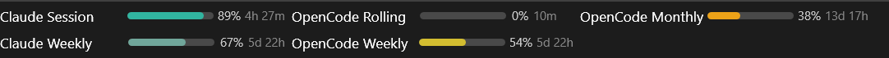
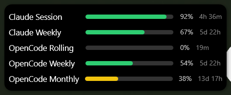
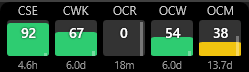
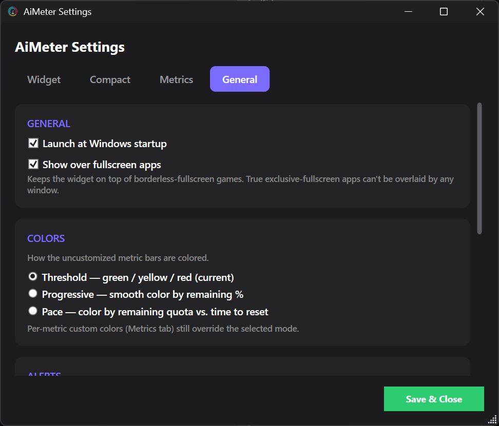

Your AI usage limits, always in view.
AiMeter is a small Windows widget that shows how much of your Claude and OpenCode quota is left and when it resets. It sits on top of other windows, over the taskbar, or right inside it.

Get started in a minute
No installer. AiMeter is one file you can keep anywhere, and it updates itself.
-
Download and run
Save AiMeter.exe to a folder you can write to, such as Documents or a Tools folder, and open it. It starts in the system tray.
-
Allow it the first time
The exe isn't code-signed yet, so Windows may say "Windows protected your PC". Click More info, then Run anyway.
-
Sign in to your providers
Open Settings → General → Accounts and log into Claude, OpenCode or both. Your bars appear after the first refresh.
Three layouts
Switch any time from the widget's menu or in Settings.

Compact
A slim, draggable strip of bars with percent left and a short reset label.

Taskbar
Thin vertical columns docked over the taskbar, with a countdown on each.

Settings
Choose metrics, colors, alerts, opacity and accounts.
Features
Claude and OpenCode together
Claude session, weekly and Extra Usage limits, plus OpenCode Go rolling, weekly and monthly usage.
Live reset countdowns
Every bar shows when it resets, in days and hours for long windows.
Color modes
Fixed thresholds, a smooth gradient, or pace: quota left versus time to reset.
Notifications
Get told when a quota runs low, runs out or resets.
Game friendly
Stays above borderless-fullscreen games and lets clicks pass through while you play.
Works offline
If a provider can't be reached, the bars keep their last numbers with a clear stale warning.
Updates you approve
New versions show up in the tray. Nothing downloads until you say so, and every download is verified.
Stays out of the way
Tray app with launch at sign-in, adjustable opacity and hover dimming.
What's new in 2.1.0
Released November 19, 2026. Full changelog
- Updates from the tray, downloaded only after you approve them and verified before install.
- Last known values when offline, dimmed with a warning and their age.
- OpenCode usage works again after the OpenCode Console redesign.
- No more stuck startups: if the embedded browser hangs, AiMeter retries on its own.
- Aligned labels with a monospaced widget font, and an Open logs folder button for troubleshooting.
Questions
Why does Windows warn me when I open it?
AiMeter isn't code-signed yet, so Microsoft Defender SmartScreen doesn't recognize new versions. Click More info → Run anyway. You can check the file against the SHA-256 hash on the release page with Get-FileHash AiMeter.exe.
What do I need to run it?
Windows 11 24H2 or later on x64, the .NET 10 Desktop Runtime (Windows offers to install it if it's missing), and the WebView2 Runtime, which Windows 11 already includes.
Does AiMeter see my password?
No. You sign in on Claude's and OpenCode's own login pages inside an embedded browser. The session stays in that browser's profile on your PC, and AiMeter only reads your usage numbers through it.
Where are my settings stored?
In %AppData%\AiMeter: settings, the browser profile, the last known usage values and daily logs. Delete the folder to reset everything.
How do updates work?
AiMeter checks GitHub about once a day. When a new version is out, it appears in the tray menu. Pressing Download & install downloads it, checks its hash and version, and swaps the exe, keeping the old one as a backup. You can turn checks off in Settings.
Something stopped updating. What now?
Open Settings → General → Diagnostics → Open logs folder and attach today's log to a GitHub issue. Each line includes the app version.
Private by design
Your session and settings stay on your PC. AiMeter has no server and no telemetry, and it connects only to claude.ai, opencode.ai and GitHub for update checks. Read the privacy policy.